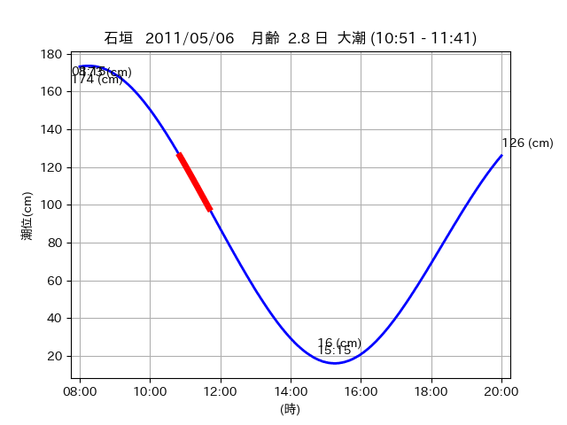

<!DOCTYPE html>
<html>
<head>
    
    <meta http-equiv="content-type" content="text/html; charset=UTF-8" />
    
        <script>
            L_NO_TOUCH = false;
            L_DISABLE_3D = false;
        </script>
    
    <style>html, body {width: 100%;height: 100%;margin: 0;padding: 0;}</style>
    <style>#map {position:absolute;top:0;bottom:0;right:0;left:0;}</style>
    <script src="https://cdn.jsdelivr.net/npm/leaflet@1.9.3/dist/leaflet.js"></script>
    <script src="https://code.jquery.com/jquery-3.7.1.min.js"></script>
    <script src="https://cdn.jsdelivr.net/npm/bootstrap@5.2.2/dist/js/bootstrap.bundle.min.js"></script>
    <script src="https://cdnjs.cloudflare.com/ajax/libs/Leaflet.awesome-markers/2.0.2/leaflet.awesome-markers.js"></script>
    <link rel="stylesheet" href="https://cdn.jsdelivr.net/npm/leaflet@1.9.3/dist/leaflet.css"/>
    <link rel="stylesheet" href="https://cdn.jsdelivr.net/npm/bootstrap@5.2.2/dist/css/bootstrap.min.css"/>
    <link rel="stylesheet" href="https://netdna.bootstrapcdn.com/bootstrap/3.0.0/css/bootstrap-glyphicons.css"/>
    <link rel="stylesheet" href="https://cdn.jsdelivr.net/npm/@fortawesome/fontawesome-free@6.2.0/css/all.min.css"/>
    <link rel="stylesheet" href="https://cdnjs.cloudflare.com/ajax/libs/Leaflet.awesome-markers/2.0.2/leaflet.awesome-markers.css"/>
    <link rel="stylesheet" href="https://cdn.jsdelivr.net/gh/python-visualization/folium/folium/templates/leaflet.awesome.rotate.min.css"/>
    
            <meta name="viewport" content="width=device-width,
                initial-scale=1.0, maximum-scale=1.0, user-scalable=no" />
            <style>
                #map_48f83784b5f5c8c0ad2fc945d768a737 {
                    position: relative;
                    width: 2048.0px;
                    height: 1600.0px;
                    left: 0.0%;
                    top: 0.0%;
                }
                .leaflet-container { font-size: 1rem; }
            </style>
        
</head>
<body>
    
    
            <div class="folium-map" id="map_48f83784b5f5c8c0ad2fc945d768a737" ></div>
        
</body>
<script>
    
    
            var map_48f83784b5f5c8c0ad2fc945d768a737 = L.map(
                "map_48f83784b5f5c8c0ad2fc945d768a737",
                {
                    center: [24.071, 123.799],
                    crs: L.CRS.EPSG3857,
                    ...{
  "zoom": 12,
  "zoomControl": true,
  "preferCanvas": false,
}

                }
            );

            

        
    
            var tile_layer_4b1a6ff0418a2ec2a820fb8ae192a23e = L.tileLayer(
                "https://cyberjapandata.gsi.go.jp/xyz/seamlessphoto/{z}/{x}/{y}.jpg",
                {
  "minZoom": 0,
  "maxZoom": 18,
  "maxNativeZoom": 18,
  "noWrap": false,
  "attribution": "\u5730\u7406\u9662\u5730\u56f3",
  "subdomains": "abc",
  "detectRetina": false,
  "tms": false,
  "opacity": 1,
}

            );
        
    
            tile_layer_4b1a6ff0418a2ec2a820fb8ae192a23e.addTo(map_48f83784b5f5c8c0ad2fc945d768a737);
        
    
            var marker_7c6245bd6caf740e73dea37fbd501894 = L.marker(
                [24.0729, 123.7889],
                {
}
            ).addTo(map_48f83784b5f5c8c0ad2fc945d768a737);
        
    
            var icon_a3866269943f8e48d2be207a5968c932 = L.AwesomeMarkers.icon(
                {
  "markerColor": "orange",
  "iconColor": "white",
  "icon": "info-sign",
  "prefix": "glyphicon",
  "extraClasses": "fa-rotate-0",
}
            );
        
    
        var popup_ccb4d2ac9f5fb1d5ae1423528c12d1c9 = L.popup({
  "maxWidth": "100%",
});

        
            
                var html_243f120a866464a13274317bc9594ffb = $(`<div id="html_243f120a866464a13274317bc9594ffb" style="width: 100.0%; height: 100.0%;"><table><tr><td></td></tr><tr><td><center>20110506 No.1 </center></table></td></tr></table</div>`)[0];
                popup_ccb4d2ac9f5fb1d5ae1423528c12d1c9.setContent(html_243f120a866464a13274317bc9594ffb);
            
        

        marker_7c6245bd6caf740e73dea37fbd501894.bindPopup(popup_ccb4d2ac9f5fb1d5ae1423528c12d1c9)
        ;

        
    
    
                marker_7c6245bd6caf740e73dea37fbd501894.setIcon(icon_a3866269943f8e48d2be207a5968c932);
            
    
            var poly_line_71dba4627f204db8db3a7688fcf181fc = L.polyline(
                [[24.0729, 123.7889], [24.0749, 123.787]],
                {"bubblingMouseEvents": true, "color": "#FF00FF", "dashArray": null, "dashOffset": null, "fill": false, "fillColor": "#FF00FF", "fillOpacity": 0.2, "fillRule": "evenodd", "lineCap": "round", "lineJoin": "round", "noClip": false, "opacity": 1.0, "smoothFactor": 1.0, "stroke": true, "weight": 3}
            ).addTo(map_48f83784b5f5c8c0ad2fc945d768a737);
        
    
            var marker_08f6b6b2c3606758f9e63131197f9470 = L.marker(
                [24.0738, 123.7573],
                {
}
            ).addTo(map_48f83784b5f5c8c0ad2fc945d768a737);
        
    
            var icon_fc8061115e72397a837c08ad31a2c9f7 = L.AwesomeMarkers.icon(
                {
  "markerColor": "orange",
  "iconColor": "white",
  "icon": "info-sign",
  "prefix": "glyphicon",
  "extraClasses": "fa-rotate-0",
}
            );
        
    
        var popup_f94d97451699b80562e543b46e6830d6 = L.popup({
  "maxWidth": "100%",
});

        
            
                var html_c75abd882a672f0d3a85cc695ceb4eb6 = $(`<div id="html_c75abd882a672f0d3a85cc695ceb4eb6" style="width: 100.0%; height: 100.0%;"><table><tr><td></td></tr><tr><td><center>20110506 No.2 </center></table></td></tr></table</div>`)[0];
                popup_f94d97451699b80562e543b46e6830d6.setContent(html_c75abd882a672f0d3a85cc695ceb4eb6);
            
        

        marker_08f6b6b2c3606758f9e63131197f9470.bindPopup(popup_f94d97451699b80562e543b46e6830d6)
        ;

        
    
    
                marker_08f6b6b2c3606758f9e63131197f9470.setIcon(icon_fc8061115e72397a837c08ad31a2c9f7);
            
    
            var poly_line_979792f4a4fcd759d72d4bf6d068878d = L.polyline(
                [[24.0738, 123.7573], [24.0734, 123.75]],
                {"bubblingMouseEvents": true, "color": "#00FFFF", "dashArray": null, "dashOffset": null, "fill": false, "fillColor": "#00FFFF", "fillOpacity": 0.2, "fillRule": "evenodd", "lineCap": "round", "lineJoin": "round", "noClip": false, "opacity": 1.0, "smoothFactor": 1.0, "stroke": true, "weight": 3}
            ).addTo(map_48f83784b5f5c8c0ad2fc945d768a737);
        
    
            var marker_103c470435b86e307a566bef236de923 = L.marker(
                [24.0725, 123.7936],
                {
}
            ).addTo(map_48f83784b5f5c8c0ad2fc945d768a737);
        
    
            var icon_324aa5de7dc62426c7682dc1236ab28b = L.AwesomeMarkers.icon(
                {
  "markerColor": "orange",
  "iconColor": "white",
  "icon": "info-sign",
  "prefix": "glyphicon",
  "extraClasses": "fa-rotate-0",
}
            );
        
    
        var popup_e187e1b04238e758fd9796f31f4a815a = L.popup({
  "maxWidth": "100%",
});

        
            
                var html_168a66be715b49105918cf35df312082 = $(`<div id="html_168a66be715b49105918cf35df312082" style="width: 100.0%; height: 100.0%;"><table><tr><td></td></tr><tr><td><center>20110506 No.3 </center></table></td></tr></table</div>`)[0];
                popup_e187e1b04238e758fd9796f31f4a815a.setContent(html_168a66be715b49105918cf35df312082);
            
        

        marker_103c470435b86e307a566bef236de923.bindPopup(popup_e187e1b04238e758fd9796f31f4a815a)
        ;

        
    
    
                marker_103c470435b86e307a566bef236de923.setIcon(icon_324aa5de7dc62426c7682dc1236ab28b);
            
    
            var poly_line_3e87c413170017371842d8d369943d3a = L.polyline(
                [[24.0725, 123.7936], [24.0693, 123.804]],
                {"bubblingMouseEvents": true, "color": "#00FFFF", "dashArray": null, "dashOffset": null, "fill": false, "fillColor": "#00FFFF", "fillOpacity": 0.2, "fillRule": "evenodd", "lineCap": "round", "lineJoin": "round", "noClip": false, "opacity": 1.0, "smoothFactor": 1.0, "stroke": true, "weight": 3}
            ).addTo(map_48f83784b5f5c8c0ad2fc945d768a737);
        
</script>
</html>